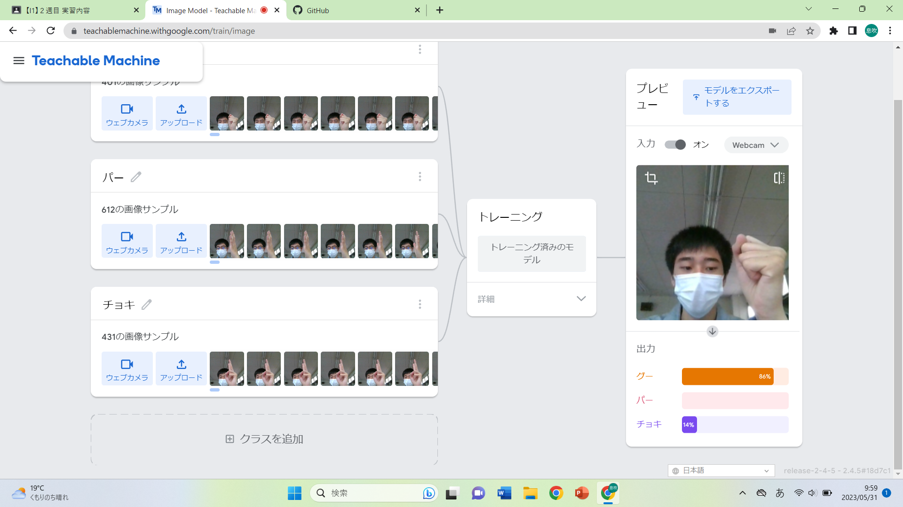
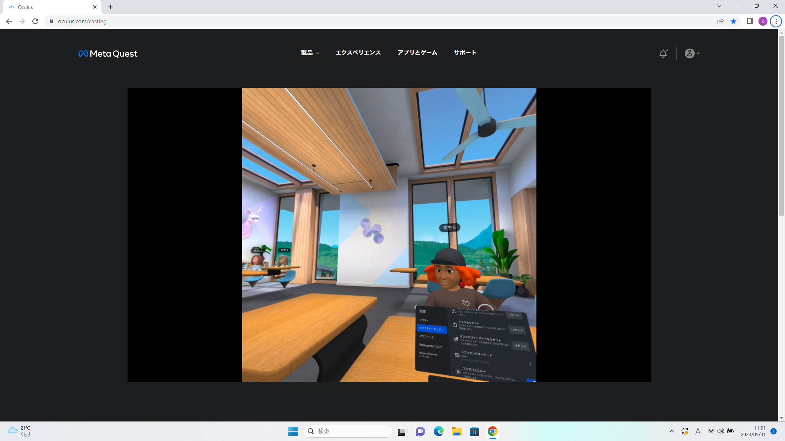

第2週目
2-1 １週目のレポートをHTMLで作る
１週目のレポート
1.内容
1週目のレポートをHTMLで作成した。1週目に体験したスクラッチとホームページについてまとめた。スクリーンショットをアップロードすることでレポート上に表示されるようにした。また、プログラミングを書き換えて「私のホームページ」に飛んでいけるようにした。
2.感想
HTMLを使ったのは初めてだったので、最初のほうはレポートを作成するのが少し難しかった。しかし、だんだんと慣れてきたので、これからのレポートも同じように作っていきたいと思う。レポートでスクラッチの説明をすることで自分自身がよりプログラムを理解することができた。
2-2 機械学習体験

1.内容
TeachableMachineを使いAIの機械学習を体験した。自分が出した手は「グー」「チョキ」「パー」のいずれかの手かを判別するようにした。判別できるようにするため、それぞれの手の写真をいろいろな角度から撮り、学習させた。その後、トレーニングさせることで、自分が出した手がどの手であるかの確率が表示されるようになった。
2.感想
私は普段はAIを使う側だが、この体験でAIを学習させる側になったことにより、よりAIに関心を持つようになった。写真を撮って学習させるだけでほとんどが正しく判別されることにとてもおどろいた。AIはこれからもどんどん改良され普及していくと思うので、将来、このAI技術を応用させて使うことのできるエンジニアになりたいと思う。
2-3 VR（バーチャルリアリティー：Virtual Reality）会議室の体験

1.内容
Workroomsというアプリケーションを使い、仮想空間を体験した。VRゴーグルをつけることにより、実際にその場にいるような体験をすることができる。 Workroomsの自分のオフィスでデスクホワイトボードを使ったり、会議室でクラスメートとホワイトボードを使ってコミュニケーションをとったりした。また、PCにミラーリングすることで、ペアの人もPCを通して仮想空間を体験することができるようにした。
2.感想
かんそうかんそう